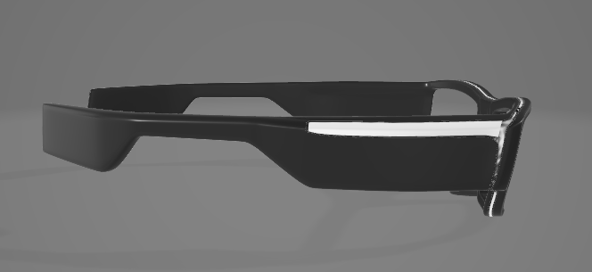
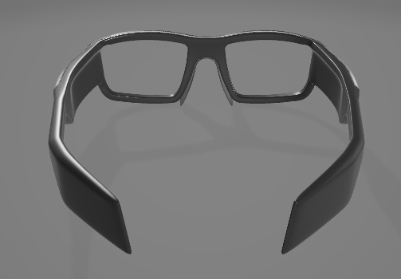
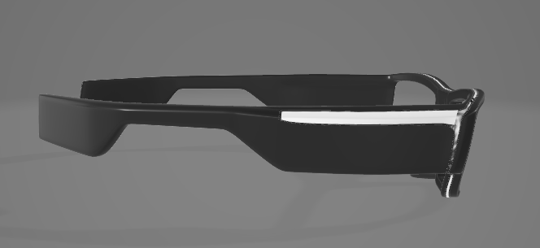
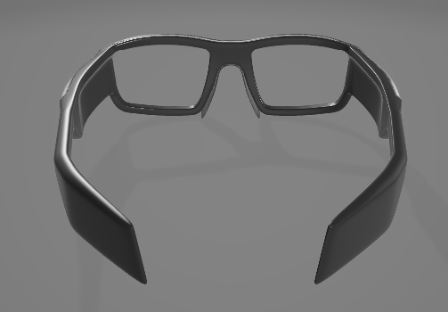

Componentes Utilizados
- Óculos feitos em impressão 3D: Armação de óculos feito com impressão 3D.
- Arduino nano v3: Microcontrolador compacto e versátil.
- Sensor de obstáculos infravermelho: Detecta objetos a curta distância.
- Buzzer ativo 5v: Emite sons para alertas e notificações.
- Mini motor de vibração: Proporciona feedback tátil ao usuário.
- Bateria 9v recarregável: Fonte de energia para o dispositivo.
- Conector de bateria 9v: Conecta a bateria ao circuito.
- Interruptor chave gangorra: Permite ligar e desligar o dispositivo.